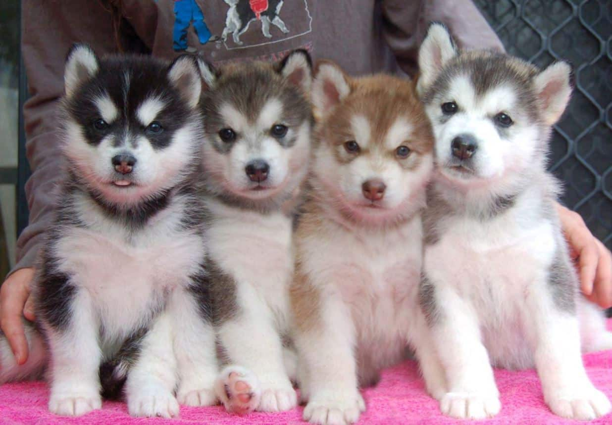

Alaskan Malamute
The Alaskan Malamute has a majestic beauty with a thick mane, the largest size of the sled dog breeds, giving Alaska a striking and majestic appearance. Every time the Alaskan dog appears on the street, it stands out and attracts everyone's eyes.
Origin
Alaska originated in from wolves, domesticated by the people of the Mahlemute tribe, then the Eskimos of Alaska trained these Malamute dogs to do sled work.
Although it is descended from wolves, Alaska has been selected for genetic resources for thousands of years to make the current Alaskan dog extremely friendly with people, hard-working, and loyal. That's why Alaska could become a sled dog breed and is the best friend of the people of Alaska.
Coat color
Some basic colors of the Alaska Malamute: Black & white, Mink & White, Red & White, Gray & white, Seal & White, and Brown & white.
